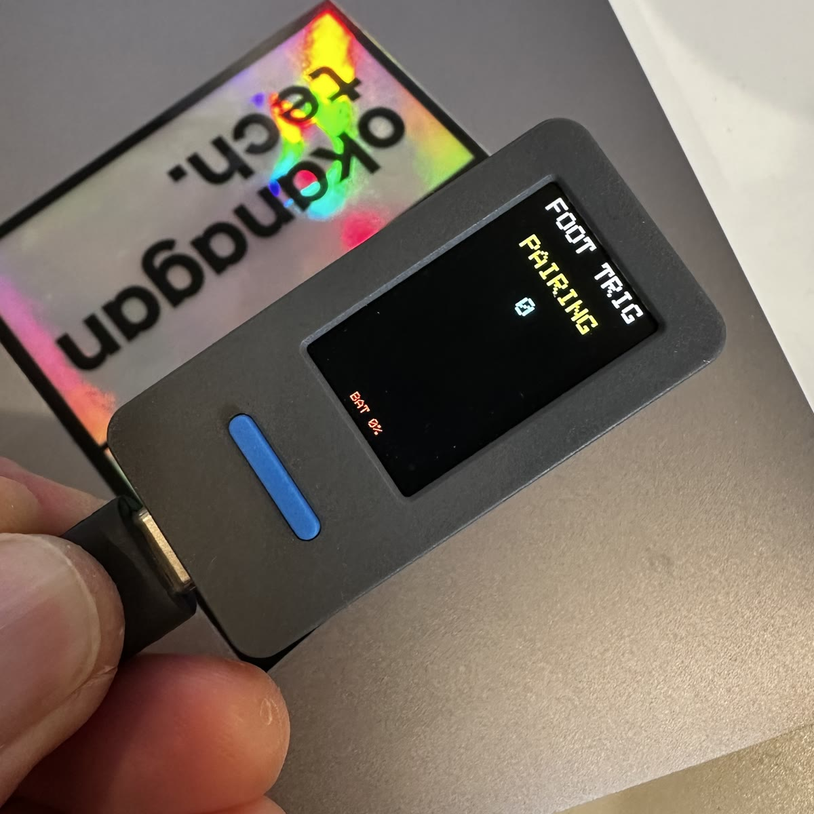
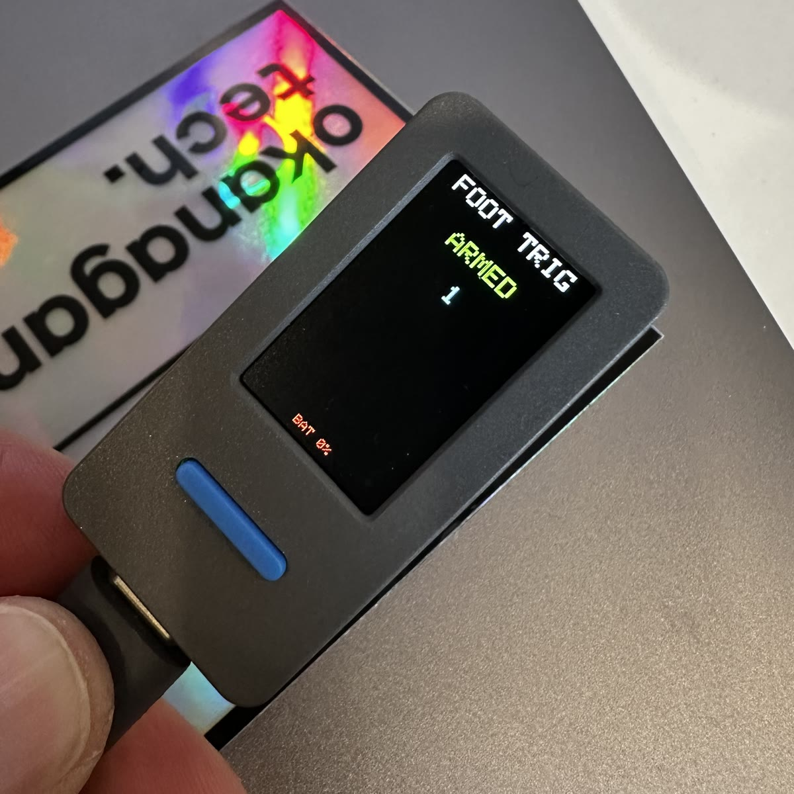
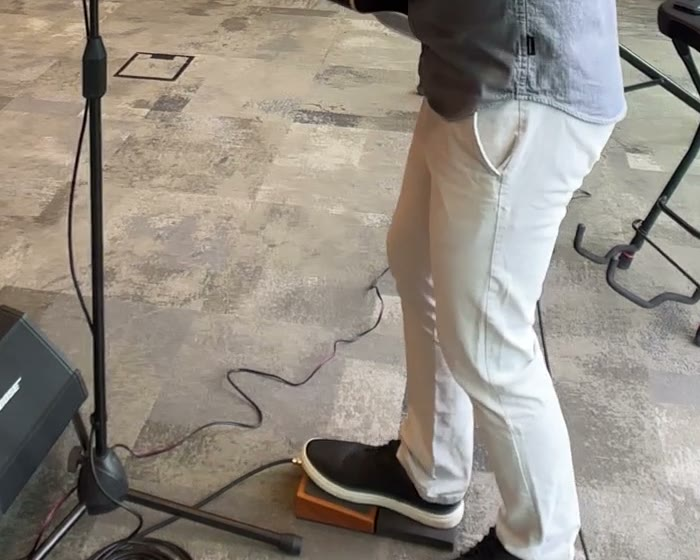

Colin Calnan / Builds / Music hardware
Foot Stomper
A kick drum I wear on my foot. A small board strapped to my instep feels a tap or a stomp and plays a bass drum through the PA, so I can keep time at a gig without standing on one leg for two hours.
- Status
- Working on the bench, not played live yet
- Built
- August 2026. First port to a working kick in one evening
- Hardware
- M5StickS3: ESP32-S3, BMI270 accelerometer, 250 mAh battery
- Sends
- Bluetooth MIDI, note 35 on channel 10, to bs-16i on an iPad
- How
- Spec first, built with Claude Code, measured at every step


Why
A stomp pedal was wrecking my hip.
The kick drum in my solo set came from a Wazinator stomp box under my right foot. That means a whole gig standing on my left leg while the right one keeps time, and my left hip and back started paying for it. I wanted the beat without the stance.

How it works
Feel the foot, send a kick.
Strap it to the top of the foot
An M5StickS3 sits on the instep, held firmly by the laces. It has an accelerometer, a 250 mAh battery and a small screen. Firm turns out to be the whole game, which is the next section.
Watch for a jump away from normal
The firmware reads acceleration about 188 times a second and keeps a slow-moving baseline of where the foot usually sits. When a reading jumps more than
2.0 gaway from that baseline, it watches for 12 ms to catch the true peak, fires once, then ignores everything for 120 ms so the impact's ringing can't double-hit.Turn force into volume
The size of the peak sets the MIDI velocity, from 71 to 127, so a light tap plays quieter than a stomp.
Send it over Bluetooth
A BLE-MIDI note 35 (acoustic bass drum) on channel 10, written by hand on the chip's built-in Bluetooth stack after the usual libraries failed.
Play it through the PA
bs-16i on the iPad plays the kick from a soundfont, out a 3.5 mm cable into the Yamaha StagePas. The screen shows PAIRING, ARMED or OFF, and the front button arms and disarms it, so walking around between songs never fires a beat.
float exc = mag - s->baseline; if (exc < 0.0f) exc = -exc; if (s->tracking) { if (exc > s->peak) s->peak = exc; if ((uint32_t)(us - s->track_start_us) >= c->peak_window_us) { s->tracking = false; s->refract_until_us = us + c->refractory_us; if (out_peak) *out_peak = s->peak; return true; } return false; // baseline deliberately frozen here } if ((int32_t)(us - s->refract_until_us) < 0) { return false; // still ringing from the last gesture } s->baseline += c->baseline_alpha * (mag - s->baseline); if (exc > c->threshold_g) { s->tracking = true; s->peak = exc; s->track_start_us = us; } return false;
From det_feed() in detector.h. The baseline freezes during a gesture, otherwise the gesture drags the baseline up behind it and shrinks its own peak.
The proof
Measured, not felt.
Project status notes, 3 Sep 2026. Detection counts from the Phase 3 detector replayed against the recorded captures.
The first mount was inside a sock, and no amount of tuning could make it work. This is why.
Peak movement per event, measured as excursion from 1 g, events at least 150 ms apart. All three recorded 31 Aug 2026 in one session, raw files in the project's captures folder.
On the instep every gesture lands to the right of the line and the shuffling sits well to the left of it. In the sock, the foot's own padding soaks up the light taps: 27 of the 31 sock events fall under the line, and 19 of them are no bigger than the biggest shuffle peak. No threshold separates those two groups. That's a mechanical limit, so the fix was the mount, not the code, and the rule I kept is to verify a mount by measuring it, never by how it feels.
Show the numbers
| Recording | Events | Smallest | Largest |
|---|---|---|---|
| Instep gestures | 40 | 2.02 g | 5.44 g |
| Sock gestures | 31 over 0.5 g | 0.55 g | 5.28 g |
| Sock shuffle | 24 peaks over 0.3 g | 0.31 g | 1.43 g |
How AI was used
Claude wrote the code. I wore the sensor.
The first night, in a chat
Versions 1.0 to 1.6 came out of one claude.ai conversation on 27 August. Each version was downloaded straight from the chat, flashed to the board, and what the board did went back into the conversation for the next one. Two crash loops later, v1.4 worked.
Then a real project, spec first
On 28 August it became a repository set up with my spec-driven development skill and run in Claude Code. A mission, a tech stack with rules the agent can't break, and a roadmap of phases. Each phase got an intent interview, then a dated folder with requirements, a plan, a validation file that says how done gets proven, and a status file. All 34 commits carry Claude as co-author.
Real data, so changes get tested on real feet
I recorded the accelerometer with the board on my foot: taps, stomps, shuffling and walking. A replay harness runs the detector over those recordings on the laptop, so a change can be checked against real movement without strapping it on every time. The chart above comes from those files.
What stayed mine
What it's for, what counts as a miss or a false trigger, wearing it, and recording every capture. An agent can write a detector. It can't stand on a stage in the thing.
AI when it runs
None. It's firmware on a small chip: a baseline, a threshold and a timer.
The hard parts
What fought back.
The Bluetooth libraries crash-looped
The usual BLE-MIDI and NimBLE libraries either wouldn't compile or sent the board into a crash loop. Version 1.2 dropped both and wrote BLE-MIDI by hand on the chip's built-in stack. Every version is pinned exactly now, because a core update is its own piece of work.
Speed costs battery
A kick has to land within about 10 ms, which needs a short Bluetooth connection interval, and the chip can't light-sleep with a live link. Slowing the sensor loop to save power dropped detection from 9 in 10 to 6 in 10, because a tap's peak only lasts one or two samples. Reverted.
The battery estimate was out by three times
I guessed 6 to 9 hours. Measured, it's 2 hours 15 minutes. That's the whole argument for measuring.
Heel-down didn't make the cut
Dropping a heel looks exactly like a step, so the gestures are tap and stomp only, and the button disarms it for walking.
Hardware I ruled out
An ESP32-C6 board (same power limit, no accelerometer), the M5 Capsule (same battery), and a battery base that weighs 90 g, which is a brick on a foot.
Still open
What it can't do yet.
Last a full set
A three-hour gig needs about 25% less power draw. A small battery add-on is the likely fix.
Go on in seconds
It laces on right now, every time. A clip mount is on the way, and M5Stack confirmed it fits.
Sound right
The kick is too reverby. The plan is to sample my old stomp box so the new one sounds the same.
Both feet
A second unit for the other foot.
A real gig
It has been to one gig and stayed in the bag. The first full set with it is the next test.
Timeline
Six versions in one evening.
| When | Version | What changed |
|---|---|---|
| 24 Aug 2026 | First design | A different board and a separate accelerometer with a hardware tap interrupt. Never built. |
| 27 Aug, 17:40 | v1.0 | Ported to the M5StickS3 with the standard BLE-MIDI libraries. |
| 27 Aug, 18:45 | v1.1 | Flicker-free display. Crash loop. |
| 27 Aug, 18:53 | v1.2 | BLE-MIDI written by hand on the built-in stack. |
| 27 Aug, 19:23 | v1.4 | On-screen checkpoints. The first version that worked. |
| 27 Aug, 22:04 | v1.6 | Power management, and the note moved from 36 to 35. |
| 28–31 Aug | Power | Radio, mic and screen trimmed. First real battery number: 2 h 15 m. |
| 31 Aug–3 Sep | Detection | The baseline detector with velocity, a recorded test set, a replay harness, and the sock mount retired. |
- ESP32-S3
- M5StickS3
- BMI270
- BLE-MIDI
- Arduino C++
- bs-16i
- Claude Code